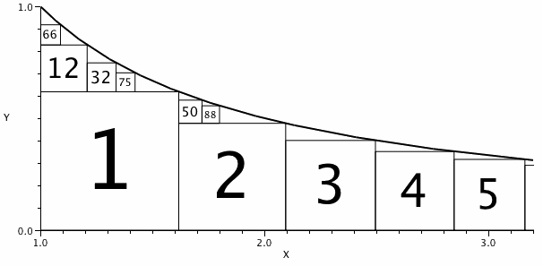

Consider the region constrained by $1 \le x$ and $0 \le y \le 1/x$.
Let $S_1$ be the largest square that can fit under the curve.
Let $S_2$ be the largest square that fits in the remaining area, and so on.
Let the index of $S_n$ be the pair $(\text{left}, \text{below})$ indicating the number of squares to the left of $S_n$ and the number of squares below $S_n$.

The diagram shows some such squares labelled by number.
$S_2$ has one square to its left and none below, so the index of $S_2$ is $(1,0)$.
It can be seen that the index of $S_{32}$ is $(1,1)$ as is the index of $S_{50}$.
$50$ is the largest $n$ for which the index of $S_n$ is $(1,1)$.
What is the largest $n$ for which the index of $S_n$ is $(3,3)$?
solve(left=1, below=1) → █solve(left=3, below=3) → █solve(left=5, below=5) → █Solution pending... the mathematician is still thinking.
Nothing here yet - come back when the dust has settled.